Ramen & Sides
-
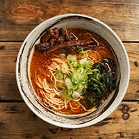
Angry Bjergsö Yuzu
Chicken broth, chili and Yuzu (Japanese citrus fruit) ,
Kombu (Japanese seaweed) base, topped with soy-marinated pork belly, spring onions
and wakame seaweed.(Medium spicy)
105:-
-
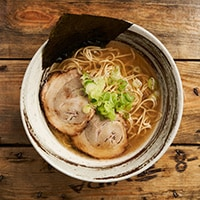
Shio Ramen
Classic chicken broth and SHIO-taré (the flavor base for the ramen, salt)
topped with thin sliced rich and tender pork neck chashu,
spring onions and crispy nori seaweed.
105:-
-
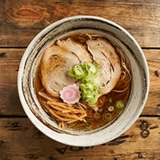
Shoyu Ramen
Chicken broth and SHOYU-taré (the flavor base for the ramen, soy-sauce) topped with thin sliced
rich and tender pork neck chashu, spring onions,
narutomaki (steamed minced fish meat) and flavored bamboo shoots.
105:-
-
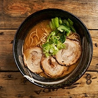
Miso Ramen
Chicken broth added a creamy miso paste. Topped with
thin sliced rich and tender pork chashu, pak choi & spring onions.
125:-
-
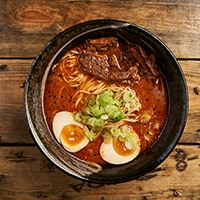
Spicy Miso Ramen (1-4)
Chicken broth and spicy miso blend, topped with kakuni (rich fatty pork belly),
spring onions and hanjyuku tamago (soft boiled egg).
Special feature: choose your spiciness (flavored from dried SHICHIMI chili and chili oil).
1 - 4.
120:-
-
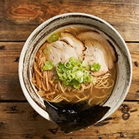
Bjergsö Yuzu Ramen
Chicken broth and Yuzu (Japanese citrus fruit), Kombu (Japanese seaweed) base,
topped with thin sliced rich and tender pork neck chashu,
spring onions, flavored bamboo shoots and crispy nori seaweed.
125:-
-
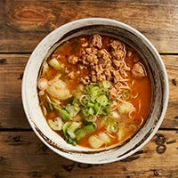
Spicy Goma Ramen
Chicken & vegetable broth with konbu taré &
a sesame / chili blend topping:
Minced chili chicken, spring onion & pak choi.
125:-
-
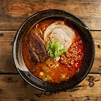
Angry Uki
A rich miso based ramen with kakuni,
chashu and spicy minced pork.
125:-
-
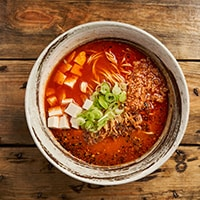
Electric Bjergsö
Chicken & vegetable broth, sichuan marinated minched pork,
chili, ma po tofu and spring onions.
125:-
-
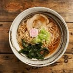
Kodomo(Kids Ramen)
Choose between a shio or shoyu style broth with chashu, wakame and naruto.
70:-
-
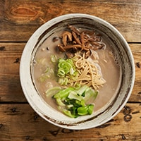
No-Meat Ramen
A broth of Kombu (Japanese seaweed), with Shoyu-taré (the flavor base for the ramen,
soy-sauce), sesame oil and homemade garlic/ginger oil.
Topped with mushrooms, wakame seawees and spring onions.
115:-
-
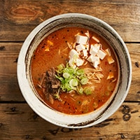
Spicy-Miso Veggie Ramen (Veggie)
Our popular spicy miso ramen, in a vegan option.
Topped with tofu and marinated mushrooms.
125:-
-
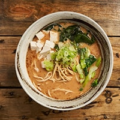
Veggie Miso Ramen (Veggie)
Vegetarian miso ramen, topped with tofu, pak choi and wakame.
125:-
-
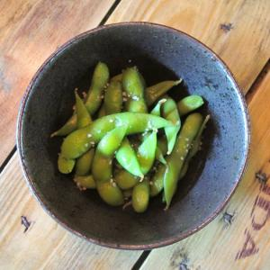
Edamame Beans
Edamame with yuzu juice and salt.
40:-
-
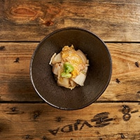
Kimchi
40:-
-
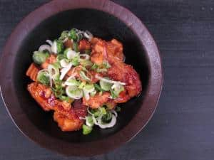
Pepper Kanuki
Pork long simmered in soy, mirin, and sugar,
served with black pepper and spring onion.
45
-
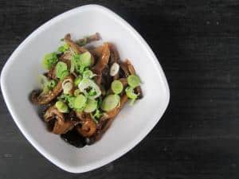
Garlic Kinoko
Mushrooms long simmered in soy marination
served with garlic oil and spring onions.
50:-